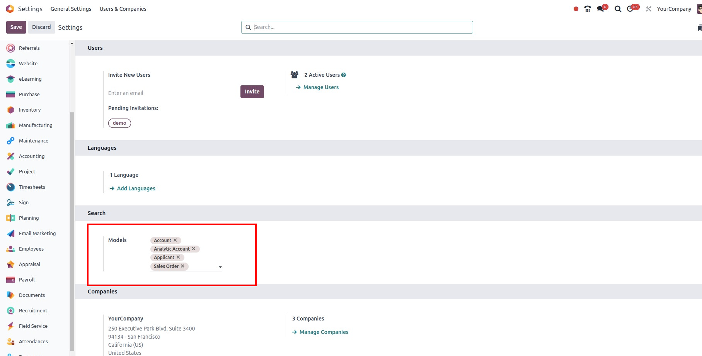
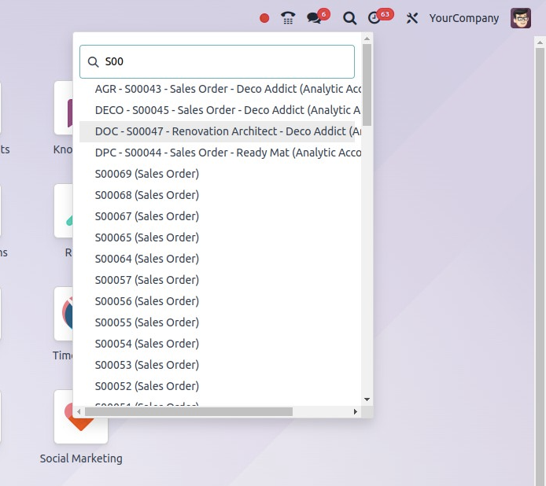

Global Search
Version: 18.0.0.1
Compatible with: Odoo 18.0
Overview
The Global Search module adds a universal search bar to your Odoo interface, allowing you to search across multiple
models at once. Models can be selected in the Settings, and results are easily accessible from the navbar.
Key Features
- Global search icon in the top navbar
- Configure searchable models via
res.config.settings
- Open matching records directly in form view
- Lightweight, responsive, and user-friendly
Usage
- Go to Settings → General Settings
- Select the models you want to include in global search
- Use the search icon in the top-right navbar
- Type your query and click any result to open it
Screenshots
1. Configure search model in settings

2. Search Results Dropdown

Support
For support or bug reports, please contact
- Gmail: dhrushilpatel2000@gmail.com
- Linkdin: www.linkedin.com/in/dhrushil-patel-72a42220a